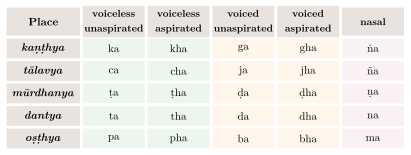
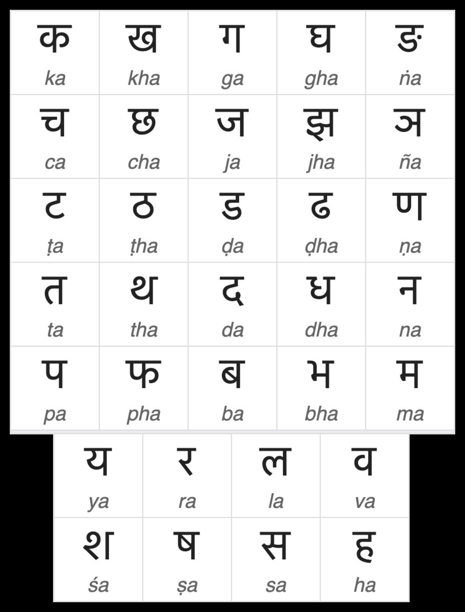

Chapter 2: Śikṣā: Phonetics and Vedic Recitation¶
śīkṣāṃ vyākhyāsyāmaḥ. varṇaḥ svaraḥ. mātrā balam. sāma santānaḥ.
We shall explain phonetics: sound, accent, quantity, force, evenness, connection.
— Taittirīya Upaniṣad 1.2.1
2.1 Introduction: Phonetics and the Veda¶
Śikṣā (“instruction”) is the auxiliary science of the Veda concerned with pronunciation, and the oldest of the sciences of language whose methods can still be followed in detail. It arose from the need to recite the Vedic texts exactly: in the ritual, a mantra was believed to be effective only if it was pronounced with the right sounds, the right accents and the right length. The Taittirīya Upaniṣad, in the passage quoted above, already names the six topics of phonetics, and the phonetic literature that followed contains one of the most detailed analyses of speech sounds produced anywhere before modern times (Allen 1953).
2.1.1 The cautionary tale of indraśatru¶
A well-known story, told in the Śatapatha Brāhmaṇa and the Taittirīya Saṃhitā, illustrates the danger of wrong accent. Tvaṣṭṛ, whose son had been killed by Indra, performed a rite to produce a son who would avenge him, using the word indraśatru. Accented on the last member, the compound means “slayer of Indra”; accented on the first, it is a possessive compound meaning “one whose slayer is Indra”. Tvaṣṭṛ placed the accent on the first member, and the being produced, Vṛtra, was slain by Indra. The Pāṇinīya Śikṣā draws the moral, in a verse also quoted (with a different first word) by Patañjali:
Pāṇinīya Śikṣā 52 (numbering varies)
mantro hīnaḥ svarato varṇato vā mithyā prayukto na tam artham āha
sa vāgvajro yajamānaṃ hinasti yathendraśatruḥ svarato ’parādhāt
“A mantra deficient in accent or in sound, wrongly used, does not convey the intended meaning; that thunderbolt of speech harms the sacrificer, as indraśatru did through the fault in its accent.”
2.2 The Prātiśākhyas¶
The oldest surviving phonetic treatises are the Prātiśākhyas, each belonging to a particular Vedic school (śākhā). Their main task is practical: to state the rules by which the word-by-word text (padapāṭha) is converted into the continuous text (saṃhitāpāṭha), with all the changes of sound and accent this involves. In doing so they describe the sounds of the language in detail (Table 2.1).
| Text | Veda / school | Attributed to | Notes |
|---|---|---|---|
| Ṛgveda Prātiśākhya | Ṛgveda, Śākala | Śaunaka | In verse; eighteen chapters (paṭala); sounds, sandhi, accent, recitation |
| Taittirīya Prātiśākhya | Black Yajurveda, Taittirīya | — | Unusually detailed articulatory descriptions |
| Vājasaneyi Prātiśākhya | White Yajurveda | Kātyāyana | Concise; shares terminology with Pāṇini |
| Atharvaveda Prātiśākhya (Śaunakīyā Caturādhyāyikā) | Atharvaveda, Śaunaka | — | Four chapters; edited and translated by Deshpande (1997) |
| Ṛktantra | Sāmaveda | — | Phonetics of the Sāmaveda |
The dates of these texts are uncertain. In their present form most are probably not older than Pāṇini, and some are later; but they draw on earlier teaching, and the padapāṭha on which they depend is older still. W. D. Whitney’s editions and translations of the Atharvaveda and Taittirīya Prātiśākhyas in the 19th century, and W. S. Allen’s Phonetics in Ancient India (Allen 1953), remain basic studies.
Beside the Prātiśākhyas stands a large literature of later Śikṣā texts, many of them short and of uncertain date: the Pāṇinīya Śikṣā (attributed to Pāṇini, but probably later), the Yājñavalkya Śikṣā, the Nāradīya Śikṣā (on the music of the Sāmaveda), the Māṇḍūkī Śikṣā and others.
2.3 The Articulation of Sounds¶
The Indian phoneticians described sounds in terms of three parameters: the place of articulation (sthāna), the active articulator (karaṇa, usually a part of the tongue or the lips) and the effort or manner (prayatna). The Pāṇinīya Śikṣā lists eight places at which sounds are produced:
Pāṇinīya Śikṣā 13 (numbering varies)
aṣṭau sthānāni varṇānām uraḥ kaṇṭhaḥ śiras tathā
jihvāmūlaṃ ca dantāś ca nāsikauṣṭhau ca tālu ca
“The places of the sounds are eight: the chest, the throat, the head, the root of the tongue, the teeth, the nose, the lips and the palate.”
2.3.1 Places of articulation (sthāna)¶
Later grammatical manuals such as the Siddhāntakaumudī assign the sounds to places as shown in Table 2.2.
| Place | Modern term | Sounds |
|---|---|---|
| kaṇṭha (throat) | velar / glottal | a, ā; k, kh, g, gh, ṅ; h; visarga (ḥ) |
| tālu (palate) | palatal | i, ī; c, ch, j, jh, ñ; y; ś |
| mūrdhan (“head”, roof of the mouth) | retroflex | ṛ, ṝ; ṭ, ṭh, ḍ, ḍh, ṇ; r; ṣ |
| danta (teeth) | dental | ḷ; t, th, d, dh, n; l; s |
| oṣṭha (lips) | labial | u, ū; p, ph, b, bh, m |
| kaṇṭha + tālu | — | e, ai |
| kaṇṭha + oṣṭha | — | o, au |
| danta + oṣṭha | labio-dental | v |
| nāsikā (nose) | nasal | the nasal consonants (together with their oral place); anusvāra |
| jihvāmūla (root of the tongue) | — | jihvāmūlīya (the variant of visarga before k, kh) |
The term mūrdhanya, literally “of the head”, was translated as “cerebral” by early European scholars; the modern term “retroflex” describes the actual articulation, in which the tip of the tongue is curled back against the roof of the mouth.
2.3.2 Internal effort (ābhyantara prayatna)¶
The “internal effort” is the degree of closure of the speech organs (Table 2.3).
| Term | Meaning | Sounds |
|---|---|---|
| spṛṣṭa | contact | stops, including nasals (the five classes) |
| īṣatspṛṣṭa | slight contact | the semivowels y, r, l, v (approximants) |
| īṣadvivṛta | slightly open | the sibilants and h, in the later Pāṇinian manuals |
| vivṛta | open | vowels; in some phonetic texts also the sibilants and h |
| saṃvṛta | closed | short a in actual pronunciation (restored by Pāṇini’s last rule, 8.4.68) |
2.3.3 External effort (bāhya prayatna)¶
The later Pāṇinian manuals list eleven “external efforts”, which correspond to what modern phonetics describes as voicing, aspiration and pitch (Table 2.4 and Figure 2.1).
| Terms | Modern equivalent | Sounds |
|---|---|---|
| vivāra, śvāsa, aghoṣa | open glottis, breath; voiceless | 1st and 2nd consonants of each class (k, kh, c, ch …); ś, ṣ, s; visarga |
| saṃvāra, nāda, ghoṣa | closed glottis, resonance; voiced | 3rd, 4th and 5th consonants of each class; y, r, l, v; h |
| alpaprāṇa | unaspirated (“little breath”) | 1st, 3rd and 5th of each class; y, r, l, v |
| mahāprāṇa | aspirated (“great breath”) | 2nd and 4th of each class; ś, ṣ, s, h |
| udātta, anudātta, svarita | high, low and falling pitch | vowels (Section 2.5) |

This five-by-five arrangement, followed by the semivowels, sibilants and h, is the order of the letters in every Indian script derived from Brāhmī (Figure 2.2; see also Chapter 12). It proceeds from the back of the mouth to the front, and within each class from voiceless to voiced and from unaspirated to aspirated.


2.3.4 Some fine observations of the Prātiśākhyas¶
The phonetic treatises record details of pronunciation that only careful listening could have caught (Allen 1953). The most remarkable is their account of voicing. They explain the difference between voiceless and voiced sounds by the state of the throat: with the glottis open, “breath” (śvāsa) is emitted; with it closed, “resonance” (nāda). Allen regarded this as one of the most striking achievements of the Indian phoneticians, since European phonetics reached a correct explanation of voicing only in the 19th century. The treatises also note that the visarga is pronounced as a velar fricative before k and kh (jihvāmūlīya) and as a bilabial one before p and ph (upadhmānīya); that a stop followed by another stop is “held” without audible release (abhinidhāna); and that a short vowel-like sound (svarabhakti) may be heard between r and a following consonant, while some schools recognised a nasal “twin” (yama) between a stop and a following nasal. Length was measured in morae, and some texts compare the short, long and prolated (pluta) vowels with the calls of the blue jay, the crow and the peacock.
2.3.5 The vowels¶
Table 2.5 sets out the Sanskrit vowels as the phonetic tradition classifies them.
| Vowel | Length | Place | Notes |
|---|---|---|---|
| a | short | throat | Closed (saṃvṛta) in pronunciation; pairs with ā in the grammar |
| ā | long | throat | Open |
| i, ī | short, long | palate | |
| u, ū | short, long | lips | |
| ṛ, ṝ | short, long | “head” (retroflex) | Vocalic r, described as containing an r-element |
| ḷ | short | teeth | Vocalic l; occurs only in forms of the root kḷp |
| e | long | throat + palate | Historically a diphthong (Indo-Iranian *ai); a simple long vowel in classical times |
| ai | long | throat + palate | Diphthong |
| o | long | throat + lips | Historically a diphthong (Indo-Iranian *au); a simple long vowel in classical times |
| au | long | throat + lips | Diphthong |
The analysis of e and o as compounds of a with i and u, which is built into Pāṇini’s rules of vowel combination (a + i \(\rightarrow\) e), reflects their history: comparative linguistics shows that they arose from Indo-Iranian diphthongs. Any vowel may also be prolated (pluta, three morae), as in calling to someone at a distance, and nasalised.
2.4 The Six Topics of Phonetics¶
The Taittirīya Upaniṣad (1.2.1) names six topics of phonetics (Table 2.6).
| Term | Meaning | Scope |
|---|---|---|
| varṇa | sound | The individual speech sounds and their articulation |
| svara | accent | The pitch accents udātta, anudātta, svarita |
| mātrā | quantity | Short (one mora), long (two) and prolated (three) vowels |
| bala | force | The effort of articulation |
| sāma | evenness | Even, balanced delivery |
| santāna | connection | The joining of sounds in continuous recitation (saṃhitā) |
2.5 Accent (svara)¶
Vedic Sanskrit had a pitch accent, inherited from Proto-Indo-European and comparable to that of ancient Greek. The phoneticians distinguished three accents:
- Udātta (“raised”)
- the high pitch of the accented syllable.
- Anudātta (“not raised”)
- the low pitch of unaccented syllables.
- Svarita (“sounded”)
- a falling pitch. It occurs regularly on the syllable after an udātta (dependent svarita), and in some words independently (jātya or independent svarita), where it arose historically from the contraction of an accented vowel with a following one.
The phoneticians also noted finer distinctions, such as the extra-low pitch of the syllable immediately before an udātta, and the monotone (pracaya or ekaśruti) of unaccented syllables following a svarita. In Ṛgveda manuscripts the anudātta is usually marked by a horizontal stroke below the syllable and the svarita by a vertical stroke above it, while the udātta itself is left unmarked (see Figure 1.3); other Vedic schools use other systems. Classical Sanskrit lost the pitch accent, and Pāṇini’s detailed accent rules apply mainly to the Vedic language.
2.6 Modes of Vedic Recitation¶
The Vedic texts were preserved for well over two thousand years by memorisation in families of reciters. To protect them, teachers developed several modes of recitation (pāṭha) in addition to the continuous text (Table 2.7).
| Mode | Pattern | Description |
|---|---|---|
| saṃhitāpāṭha | abcd | Continuous text, with all sandhi applied |
| padapāṭha | a | b | c | d | Each word separately, sandhi undone, compounds analysed; for the Ṛgveda attributed to Śākalya |
| kramapāṭha | ab, bc, cd … | Overlapping pairs |
| jaṭāpāṭha | ab ba ab, bc cb bc … | Each pair forwards, backwards and forwards |
| ghanapāṭha | ab ba abc cba abc, bc cb bcd dcb bcd … | Pairs and triplets in forward and reverse order |
The first verse of the Ṛgveda shows the difference between the first two modes. In the continuous text (saṃhitāpāṭha) it reads, without the accent marks:
agnim īḷe purohitaṃ yajñasya devam ṛtvijam hotāraṃ ratnadhātamam
In the word-by-word text (padapāṭha) each word is given in its independent form, and the compounds are divided:
agnim īḷe puraḥ-hitam yajñasya devam ṛtvijam hotāram ratna-dhātamam
The padapāṭha undoes the changes of the continuous text: the anusvāra of purohitaṃ and hotāraṃ is restored to m, and puro- is shown to be puraḥ “in front”. It is therefore already a grammatical analysis, and the Prātiśākhyas are, in effect, rules for getting from the second line back to the first. In the kramapāṭha each word is then recited with the one that follows it (agnim īḷe, īḷe purohitam, and so on), with special conventions for compounds and for the ends of verses.
The jaṭā and ghana modes belong to a set of eight “modifications” (vikṛti) of the kramapāṭha. In them each word is recited many times, in different combinations, forwards and backwards, and with the sandhi appropriate to each combination. A reciter who has mastered the ghanapāṭha of a whole Veda is honoured with the title ghanapāṭhin.
Learning followed a fixed routine that is still observed in traditional Vedic schools. A teacher recites a short passage, usually a phrase or half-verse, and the students repeat it several times, together and individually, with the accents marked by movements of the hand or head; the next day’s lesson begins with a repetition of the previous one. Only when the continuous text is secure are the word-by-word and the more complex modes learned. The discipline of the body that goes with recitation — posture, breathing, hand movements — is itself part of the tradition, and different schools have characteristic gestures for the accents. Meaning was not part of this training: a reciter could be perfect in the text without understanding it, which is one reason why the separate sciences of grammar and nirukta were needed (Chapter 4).
These techniques have been compared to modern error-detecting codes, and the comparison is a fair analogy: the redundancy they build into recitation makes it very hard for an error to pass unnoticed. The result is remarkable. Since the Śākala recension of the Ṛgveda was fixed, together with its padapāṭha, in the late Vedic period, it has been handed down with almost no variation in wording or accent, so that recitations in different parts of India still agree with one another and with the manuscripts. Faithful transmission of the fixed text is not, however, the same as identity with what the poets first composed. Vedic philologists since Hermann Oldenberg have shown that the fixed text was edited in the process: its sandhi was standardised and some vowel contractions were introduced, so that the metre of many lines comes right only when they are undone (Section 3.3.1). What was preserved with such care is the text as the redactors established it, not a recording of the poets’ own pronunciation. In 2003 UNESCO proclaimed the tradition of Vedic chanting a Masterpiece of the Oral and Intangible Heritage of Humanity. The same tradition, it should be added, was restricted to men of the upper varṇas, and many recitation lineages have died out in recent generations.
2.6.1 The music of the Sāmaveda¶
The chants of the Sāmaveda are melodies set to verses mostly drawn from the Ṛgveda. Their tones, up to seven in number, are indicated in the manuscripts by numerals or syllables written above the text, according to systems that differ between the surviving schools (Kauthuma, Rāṇāyanīya and Jaiminīya). The Nāradīya Śikṣā, a phonetic text of the Sāmaveda, relates the tones of the chant to the notes of secular music, and so stands at the meeting point of phonetics and the early theory of music (Volume 9, Saṅgīta–Nāṭya). Several of the regional chanting traditions, among them the Jaiminīya tradition of the Nambudiri Brahmins of Kerala, have very few remaining practitioners.
2.7 Śikṣā and the Order of the Alphabet¶
The phoneticians’ classification determined the traditional order of the alphabet (varṇasamāmnāya): vowels first (simple, then diphthongs), then the five classes of stops from the back of the mouth to the front, then the semivowels, the sibilants and h (Table 2.8).
| Group | Sounds |
|---|---|
| Simple vowels | a ā i ī u ū ṛ ṝ ḷ |
| Diphthongs | e ai o au |
| Anusvāra, visarga | ṃ ḥ |
| Velar stops | k kh g gh ṅ |
| Palatal stops | c ch j jh ñ |
| Retroflex stops | ṭ ṭh ḍ ḍh ṇ |
| Dental stops | t th d dh n |
| Labial stops | p ph b bh m |
| Semivowels | y r l v |
| Sibilants and h | ś ṣ s h |
The contrast with the order of the Śivasūtras (Chapter 5), which serves the grammar’s need for abbreviations, shows that the phoneticians and the grammarian arranged the same sounds for different purposes. All the Brāhmī-derived scripts of South and Southeast Asia, and the Tibetan script, follow this order, and it reached as far as Japan (Section 12.7.2).
2.8 The Indian Phonetic Tradition in Comparative Perspective¶
Table 2.9 compares, in simplified form, the Indian and Greek descriptions of speech sounds.
| Feature | Indian phonetic texts | Greek grammarians |
|---|---|---|
| Basis of classification | Mainly articulatory: place, articulator and manner | Partly articulatory, partly acoustic and impressionistic |
| Stops | Five places \(\times\) voicing \(\times\) aspiration, plus nasals | Three places; voiceless, aspirated and voiced (psila, dasea, mesa) |
| Voicing | Explained by the state of the glottis (śvāsa vs nāda) | Not explained in physiological terms |
| Alphabetical order | Phonetically motivated | Inherited from the Phoenician alphabet |
When European scholars learned Sanskrit in the late 18th and 19th centuries, they encountered this tradition through the grammars and through Indian teachers. W. S. Allen and other historians of linguistics have argued that its articulatory approach, especially its explanation of voicing, contributed to the development of phonetics in 19th-century Europe (Allen 1953). That influence was real but indirect. Claims that the International Phonetic Alphabet was modelled on the Sanskrit system are not correct: the IPA was devised in the 1880s by European phoneticians on the basis of the Latin alphabet and of their own research, although the place-and-manner framework they used is one that Indian phoneticians had arrived at independently two thousand years earlier.
Further Reading¶
-
Allen, W. Sidney. 1953. Phonetics in Ancient India. Oxford University Press.. — The classic study of the Indian phoneticians.
-
Deshpande, Madhav M. 1997. Śaunakīyā Caturādhyāyikā: A Prātiśākhya of the Śaunakīya Atharvaveda. Harvard Oriental Series 52. Harvard University Press.. — Edition, translation and study of the Atharvaveda Prātiśākhya.
-
Scharfe, Hartmut. 1977. Grammatical Literature. A History of Indian Literature, 5.2. Otto Harrassowitz.. — Includes the phonetic literature.